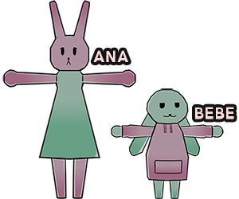

HOME
ABOUT
CONTACT
WHAT IS RABBIT ROOMIES?
Rabbit Roomies is a webcomic I made for my 2020 HSC Multimedia Major Project.
It was made using a combination of Photoshop and Blender,
and follows the daily lives of characters Ana and Bebe.

WANT TO KNOW MORE?
CONTACT US!